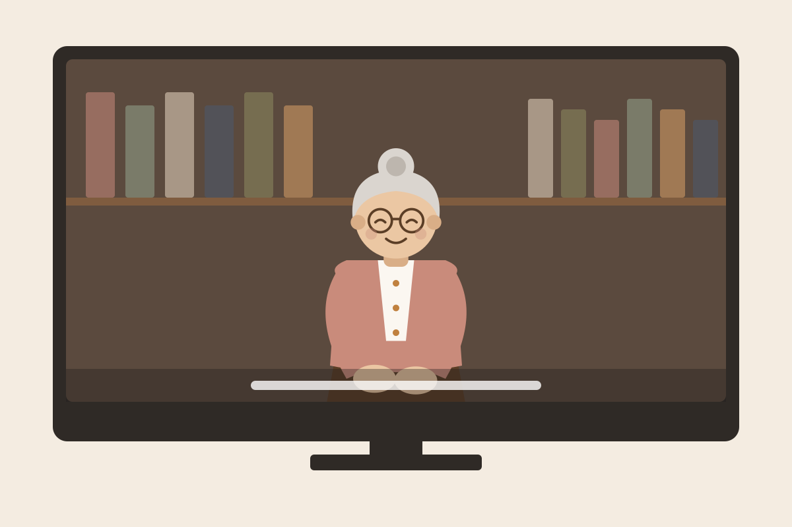
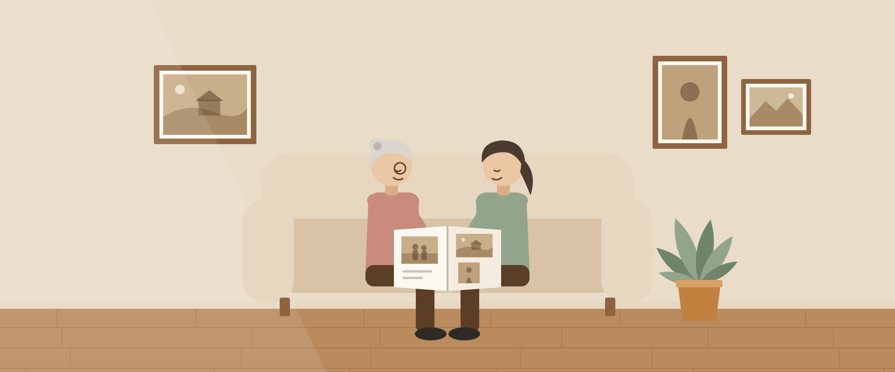
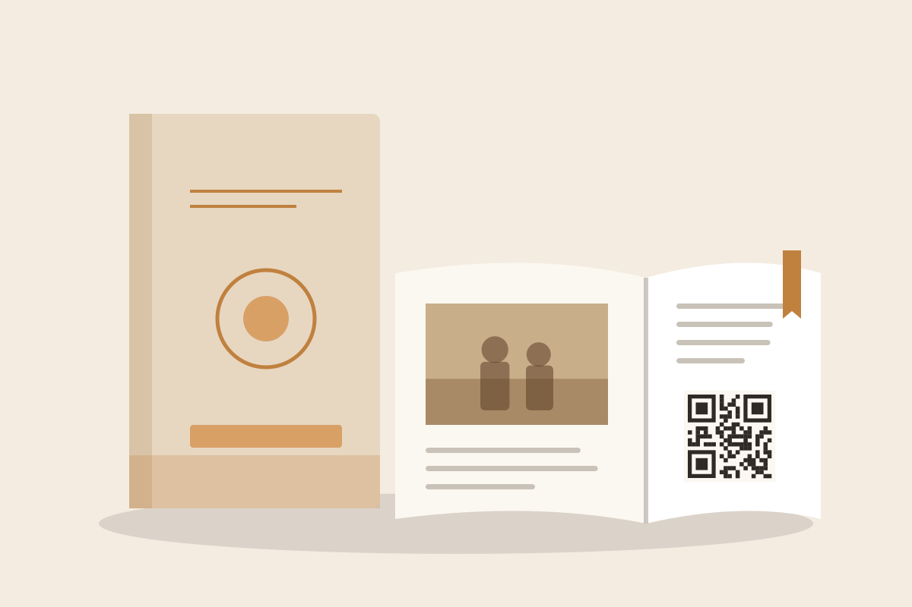
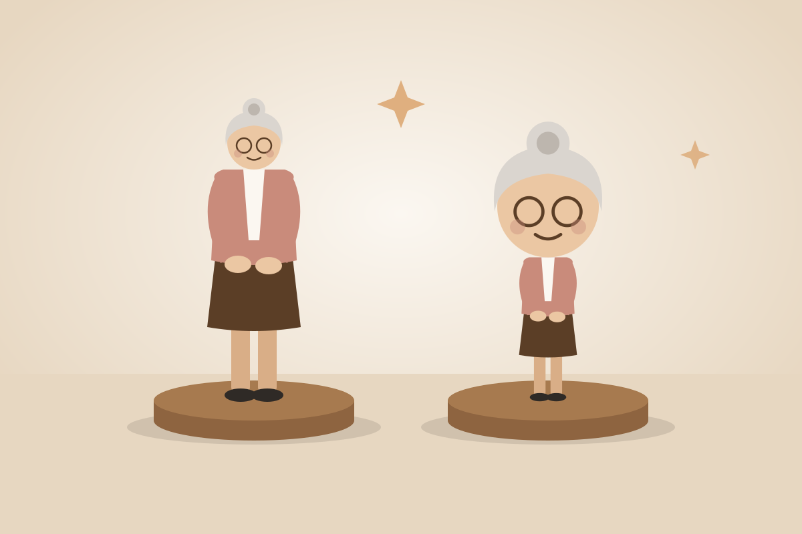
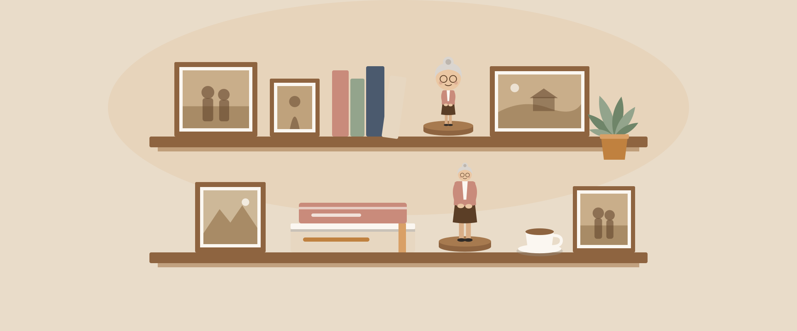

제작 예시 그림

01기본 구성
인터뷰 영상
부모님 댁에서 촬영한 인생 이야기 인터뷰를 영상으로 편집합니다.
- 분량 · 해상도 · 자막 · 파일 제공 방식은 아직 정하지 않았습니다.
Why CAPCHA
익숙한 집에서 부모님의 이야기를 듣고
목소리가 담긴 영상과 한 권의 책으로 남깁니다.
익숙한 집에서 편하게 이야기를 나눕니다.
사전 질문지로 자녀가 부모님께 묻고 싶은 질문을 미리 받습니다.
책 속 QR을 찍으면 인터뷰 영상이 열립니다.

What We Make
인터뷰 영상과 생애 기록 책을 함께 만듭니다.
3D 피규어는 원하실 때 더하는 추가 선택입니다.

부모님 댁에서 촬영한 인생 이야기 인터뷰를 영상으로 편집합니다.

인터뷰 내용과 옛 사진을 엮어 한 권의 책으로 만듭니다. 책 속 QR을 찍으면 인터뷰 영상이 열립니다.

부모님 모습을 본뜬 3D 피규어입니다. 실사형과 캐릭터형이 있습니다.
위 그림은 실제 작업물이 아닌 제작 예시 그림입니다. 실제 샘플 영상 · 책 · 피규어 사진은 준비되는 대로 올립니다.
Before You Decide
지금은 시범 제작 단계라 아직 정하지 않은 항목이 있습니다.
정해지는 대로 이 표에 적습니다.
| 항목 | 지금 안내 |
|---|---|
| 기본 구성 | 인터뷰 영상 + 생애 기록 책. 3D 피규어(실사형 · 캐릭터형)는 추가 선택입니다. |
| 가격 | 아직 정하지 않았습니다. 정해지면 이 표에 공개합니다. 그전에는 상담에서 안내합니다. |
| 지역 | 대전에서 먼저 시작합니다. 다른 지역은 가능 여부를 상담에서 확인합니다. |
| 신청 대상 | 부모님 이야기를 남기려는 자녀를 먼저 생각하고 만들었습니다. 본인 · 조부모님 이야기나 두 분 함께 인터뷰는 아직 정하지 않았습니다. |
| 촬영 시간 · 방문 인원 · 준비물 | 아직 정하지 않았습니다. |
| 제작 기간 · 초안 전달 시기 | 아직 정하지 않았습니다. |
| 영상 사양 | 분량 · 해상도 · 자막 · 내려받을 파일 · 원본 제공 여부: 아직 정하지 않았습니다. |
| 책 사양 | 크기 · 제본 · 쪽수 · 기본 권수 · 추가 주문 비용: 아직 정하지 않았습니다. |
| 피규어 사양 | 크기 · 소재 · 실사형과 캐릭터형의 차이 · 추가 기간과 비용: 아직 정하지 않았습니다. |
| 추가 자료 · 수정 | 촬영 뒤 받은 자료는 최종 승인 전까지 반영합니다. 접수 마감과 수정 횟수는 아직 정하지 않았습니다. |
| 일정 변경 · 취소 · 재촬영 | 아직 정하지 않았습니다. 정해지면 이 표와 자주 묻는 질문에 적습니다. |
| 영상 · QR 보관 | 영상 보관 기간 · 파일 백업 · 주소가 바뀔 때의 대응 · 서비스 종료 시 전달 방식: 아직 정하지 않았습니다. |
| 제작팀 | 인터뷰어와 제작팀 소개는 준비 중입니다. |
How It Works
상담 신청부터 전달까지 이 순서로 진행합니다.
인터뷰 전에 질문지를 작성합니다. 적어 주신 내용으로 인터뷰를 준비합니다.
부모님 댁에 찾아가 인터뷰를 촬영합니다. 원하지 않는 질문은 넘어가고 언제든 쉴 수 있습니다.
인터뷰를 바탕으로 영상과 책의 초안을 만듭니다.
가족이 초안을 보고 사실관계와 오탈자를 확인합니다. 촬영 뒤 찾은 사진이나 떠오른 이야기도 이때 보내 주시면 반영합니다.
확인한 내용을 고친 뒤 가족의 최종 승인을 받습니다. 수정 횟수는 아직 정하지 않았습니다.
원하시는 경우 부모님 모습을 본뜬 3D 피규어를 만듭니다.
완성한 영상과 책을 가족께 전달합니다. 진행 상황은 마이페이지에서 볼 수 있습니다.
FAQ
아니요. 지금 공개된 사이트는 화면 체험판입니다. 입력한 내용은 그 브라우저에만 저장되고 운영자에게 전송되지 않습니다. 실제 개인정보 대신 예시 내용으로 체험해 주세요.네. 상담 신청서를 받고 남겨 주신 연락처로 연락드립니다. 신청은 예약이나 결제가 아닙니다.
가격은 아직 정하지 않았습니다. 정해지면 신청 전에 알아 두실 내용에 공개합니다. 그전에는 상담에서 안내합니다.
아니요. 신청은 상담 요청입니다. 일정과 비용은 상담 뒤에 정하며 이 사이트에는 결제 기능이 없습니다.
둘러보기와 문의는 로그인 없이 할 수 있습니다.
체험판에서는 실제 로그인 대신 고객 · 관리자 체험 계정을 고릅니다.신청서와 사전 질문지는 구글 계정으로 로그인한 뒤 작성합니다. 로그인하면 내가 남긴 내용과 진행 상황을 마이페이지에서 이어서 볼 수 있습니다.
대전에서 먼저 시작합니다. 다른 지역은 가능 여부를 상담에서 확인하니 문의하기로 남겨 주세요.
아직 정하지 않았습니다. 부모님 두 분을 함께 인터뷰하는 것도 정하지 않았습니다. 문의하기로 남겨 주시면 상담에서 안내합니다.
기본 구성은 인터뷰 영상과 생애 기록 책입니다. 책 속 QR을 찍으면 영상이 열립니다.
부모님 모습을 본뜬 3D 피규어(실사형 · 캐릭터형)는 추가 선택입니다. 각 결과물의 사양은 아직 정하지 않았습니다.
아직 정하지 않았습니다. 정해지면 신청 전에 알아 두실 내용에 적습니다.
인터뷰 전에 작성하는 질문지입니다. 부모님의 사소한 일상 · 간직하고 싶은 이야기 · 자녀가 부모님께 묻고 싶은 질문 · 옛 사진을 받습니다. 이야기 칸과 사진 중 하나 이상만 채우면 됩니다.
사전 질문지에서 최대 10장을 올릴 수 있고 사진마다 설명을 붙일 수 있습니다. 화면 확인용으로 줄인 사본이 저장되며 책 인쇄용 원본을 받는 방법은 아직 정하지 않았습니다.
올라가지 않는 사진이 있으면 문의하기로 알려 주세요.
네. 영상과 책은 가족이 초안을 확인하고 최종 승인한 뒤 완성합니다. 수정 횟수와 마감은 아직 정하지 않았습니다.
영상은 유튜브 '일부 공개'로 올립니다. 일부 공개 영상은 링크를 아는 사람은 누구나 볼 수 있습니다.
책 속 QR은 이 영상을 여는 페이지로 연결됩니다. 가족만 볼 수 있게 막는 기능은 아직 없으니 QR과 주소는 가족끼리만 나눠 주세요.
보관 기간 · 파일 백업 · 서비스 종료 때 전달 방식은 아직 정하지 않았습니다. 정해지면 이 자리에 적습니다.
마이페이지의 신청서마다 수정 요청 · 일정 변경 요청 · 취소 요청 버튼이 있습니다. 처리 기준은 아직 정하지 않았습니다.
관련이 없습니다. 캡챠(CAPCHA)는 인생 이야기를 기록하는 서비스의 이름입니다.

Apply
지금은 화면 체험판입니다. 입력한 내용은 운영자에게 전송되지 않습니다.대전에서 시범 제작 중입니다. 상담 신청은 예약이나 결제가 아닙니다.